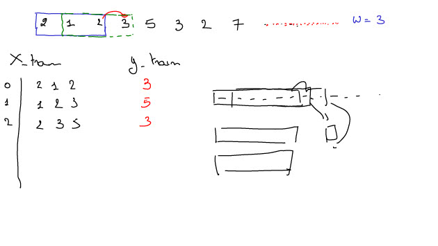

Recurrent Neural Networks
Tags: AI RNN LSTM GRU #
Date: 2021-05-07
Type: Cursus topic
Recurrent Neural Networks
Q: Waarvoor wordt een CNN vooral voor ingezet ?
A: CNN wordt vooral gebruikt voor beeldherkenning
Q: Waarvoor wordt een RNN vooral voor ingezet ? Geef enkele toepassingen.
A: RNN wordt vooral gebruikt voor NLP
(chatbots, digital assistent, tekst predictie)
Q: Wat is er specific aan een RNN die ervoor zorgt dat die goed is in NLP ?
A: een RNN heeft een soort geheugen waardoor het bij pedicties niet enkel op het heden maar ook op het verleden.
Modes van een RNN
Q: Welke modes kan een RNN hebben ?
A: Een RNN kan volgende modes hebben : One to many, Many to one (variant 1 en 2)
Vanilla Neural Network
Q: Hoe is een typisch Vanilla Neural Network opgebouwd ? Wat heeft het niet tov een RNN ?
A: Een Vanilla Neural Network heeft vaste input en meestal vaste output. Zo'n NN heeft een soort algemeen geheugen waarmee het patronen kan onthouden en herkennen maar het kan geen rekening houden met achtereenvolgende patronen die getoond worden.
One to many
Q: Wat is er typisch aan een RNN one to many ?
A: Een RNN one to many heeft variabele output en vaste input (zoals in dit vb het aantal woorden nodig voor de beschrijving van de foto)
Many to one
Q: Wat is het verschil in het doen van sentiment analyses mbv een RNN many to one of een bag of words met Naive Bayes.
A: Bij sentilment analyses zal een RNN rekening houden met de woorden die vooraf gingen en nog volgen om het sentiment te bepalen. In tegenstelling tot bijv bag of words waarbij enkel het voorkomen van het woord in een tekst de reden was waarom een tekst positief dan wel negatief gelabeld wordt. Hier wordt geen rekening gehouden met de context waarin dit woord gebruikt werd.
Q: Wat is er typisch aan een RNN many to one ?
A: Een RNN many to one heeft variabele input en één vaste ouput
Many to many
variant 1
Q: Wat is een typische toepassing aan een RNN many to many ?
A: Een typische toepassing voor many to many is vertalingen doen. Zowel de input als output kunnen varieren aangezien zowel de vertalen zin of tekst als de vertaalde zin of tekst andere grotes hebben.
variant 2
Q: Welke twee varianten van een RNN many to many bestaan er ? Geef een toepassingsvoorbeeld.
A: variant 1 : zowel input als output zijn variabel in lengte (bijv : een sequentie van woorden naar een andere sequentie van woorden)
variant 2 : zowel de input als output zijn variabel in lengte. maak een voorspelling voor elk element in de sequentie (bijv video classificatie op het niveau van frames)
De roze, groene en blauwe blok is een NN die doorheen de tijd een frame aangeboden krijgt.
Toepassingen en voorbeelden
Q: Geef enkele toepassingen voor een RNN en wat hebben die gemeenschappelijk ?
A: Mogelijke toepassingen zijn
- teksten genereren : predictie van tekst (obv getrainde teksten : shakespear, linux kernel code, ... )
- muziek generatie
- aandelenkoersen voorspellen
Het zijn allemaal tijdreeksen. Bij de training/predictie moet rekening gehouden met de opeenvolging van de samples. Dit kunnen zowel frames van een video zijn als woorden/letters van een zin/tekst als koersen van een aandeel.
Predictie van tekst


Muziekgeneratie
Tijdreeksvoorspellingen - Aandelenkoersen
Architectuur van een RNN
Q: Wat is er typisch aan de architectuur van een RNN ?
A: Typisch aan een RNN is de terug koppeling van de predicties tss alle neuronen van de hidden layer (in de tijd). Die hidden state is input voor het model om te trainen op data van tijdstip +1.
Bij predictie wordt de letter met grootste waarschijnlijkheid geselecteerd om als input te dienen voor het volgende tijdstip.
Problemen met RNN
Vanishing & exploding gradients
Q: Wat zijn de problemen met de klassieke RNN ? Wat is de oplossing ?
A: Het probleem met de klassieke RNN is de Vanishing gradient of exploding gradient : dat het model niet echt over een langer termijn geheugen beschikt. De hidden state wordt constant overschreven. Dit bevat wel een spoor van vorige predicties maar dit vervaagt snel.
LSTM is de oplossing.
Long Short Term Memory networks (LSTM)
Illustrated Guide to LSTM's and GRU's: A step by step explanation
LSTM structure
Cell LSTM veel complexer dan die van klassieke RNN.

Cell state
Lange termijn geheugen = cell state

Forget gate
Q: Wat is de functie van de forget gate in een LSTM ?
A: Een forget gate in een LSTM zorgt ervoor dat het ook zaken kan vergeten/schrappen uit zijn lange termijn geheugen indien iets niet meer relevant is.
Dit gebeurt door elk neuron van de Cell state te vermenigvuldigen met een getal tss 0 en 1. Hoe dichter bij 0 voor een neuron hoe meer er van vergeten wordt. Een sub NN bepaalt dat getal voor elk neuron.
Input gate
Q: Wat is de functie van de input gate in een LSTM ?
A: Een input gate bepaalt of de vorige voorspellingen toegevoegd moeten worden aan het lange termijn geheugen.
Cell state update
Q: Wat is de Cell State bij een LSTM ?
A: De Cell state bevat het lange terlmijn geheugen van de LSTM
Q: Wat is de Cell state update bij een LSTM ?
A: De Cell state update bepaalt/voorspelt de output (en nieuwe hidden state)

Q: Waarom mag je bij een RNN, LSTM, GRU je data niet randomizeren om te trainen ?
A: Dit mag niet omdat een RNN getraind wordt op een sequentie van trainingsvoorbeelden. Als dit gerandomizeerd wordt dan kan het model niet leren uit de sequentie.
Q: Hoe kan je het geheugen van een LSTM vergroten ?
A: Je kan het gehuegen vergroten door de hidden layer van de LSTM te vergroten omdat hierbij ook het aantal hidden state units en Cell state grote wordt bepaalt.
Q: Waarom zou je na je LSTM nog een Dense layer plaatsen ? Waarom zou je in die Dense layer lineair gebruiken ipv sigmoid ?
A: Uit LSTM komen meerdere outputs en je wil bijv maar 1 waarde als output en de Dense layer zorgt hiervoor. Door lineair te gebruiken wordt de predictie van het model gewoon doorgegeven. Sigmoid geeft een waarde tss 0 en 1 wat goed is voor classificatie maar niet als je een continu getal als output wil (bijv de prijs van een aandeel of het aantal passagiers voor de komende maand)
Q: Als de RMSE (Root Mean Square Error) op de trainingset goed is maar niet op de testset bij een LSTM hoger ligt wat wil dit waarschijnlijk zeggen over het NN ?
A: Dat de LSTM overfit is. De LSTM kan perfect het patroon van de trainingset reproduceren maar kan dit niet voor de testset.
Bij LSTM ga je niet boven de vier layers mpeestal zijn 2, 3 voldoende.
GPU LSTM is de tf.keras.layers.CuDNNLSTM
Gated Recurrent Unit (GRU)
Een Gru heeft een reset gate en een update gate.
Q: Wat is het verschil tss een GRU en LSTM ?
A: Het verschil tss een GRU en LSTM is :
- een GRU beschikt niet over een long-term memory unit
- GRU traint sneller dan LSTM
- LSTM kunnen (in theorie) langere sequenties onthouden
- Performantie is gelijkaardig aan LSTM. vooral bij kleinere datasets
GPU GRU is de tf.compat.v1.keras.layers.CuDNNGRU
LSTM hyperparameter
Hyperparameters
https://keras.io/api/layers/recurrent_layers/lstm/
- Units : aantal neuronen
- dropout : aantal activaties die uitgezet worden , werkt op de inputs
- recurrent dropout : werkt op de state
- return sequences : als je verschillende LSTMs na elkaar gaat plaatsen. Dan worden er sequenties doorgegeven aan de volgende laag (= LSTM). Als je bijv een classificatie wil van de eerste LSTM dan moet deze indicator niet opstaan want de volgende laag (= dense) moet geen sequenties krijgen maar enkel de classificaties als input.
- stateful : standaard false = stateless. Na elke batch bij het trainen wordt het geheugen gewist.
Q: Wat gebeurt er bij het trainen van een LSTM als die stateless is ?
A: Als het model stateless is wil dit zeggen dat de hyperparameter stateful op false staat en dat na elke batch tijdens de training niet enkel de weights worden bijgesteld maar dat het geheugen van de LSTM wordt gewist.
Q: Wanneer kan het nuttig zijn om het LSTM model stateless te trainen en waarom ?
A: Door het model stateless te maken wordt het geheugen van de LSTM na elke batch tijdens de training gewist. Dit kan nuttig zijn bijv bij het bepalen van sentiment van berichten. Het ene bericht (= sequence) heeft niets te zien met het andere bericht (= de volgende sequence) en hoeft de LSTM dit niet in geheugen te houden.
Q: Wanneer heeft het toegevoegde waarde om het LSTM model stateful te trainen ?
A: Het is nuttig om het LSTM model stateful te trainen als de laatste sample in de laatste sequentie van batch 1 invloed heeft op de eerste sample van de eerste sequentie van de volgende batch 2.
Q: Wat zou je als alternatief van stateful te trainen bij een LSTM kunnen doen ? Wat is het nadeel ?
A: Als alternatief van stateful te trainen is om de seqeunties langer te maken en alle samples die bij elkaar horen in één sequentie te steken. Het nadeel is dat als dit bijv sequenties zijn van videobeelden dat die veel geheugen in beslag nemen. Dan ben je verplicht om de sequentie op te delen en toch stateful te trainen.
Q: Wat is het nadeel van een stateful LSTM over epochs heen ? Wat kan je hieraan doen ?
A: Als je stateful traint dan wordt het geheugen ook over epochs heen bijgehouden. Dit wil zeggen dat je dus manueel het geheugen moet wissen op het einde van de epoch. Anders zal de sequentie van de laatste batch van de epoch gekoppeld worden aan de eerste batch van de volgende epoch. Hierdoor verbind je het eind van de volledige tijdserie met het begin van de volledige tijdserie.
Q: Wat is een bidrectional LSTM ?
A: Bidirectional LSTM zijn twee gecombineerde LSTMs.
De ene LSTM ziet de samples in chronologische volgorde en de andere in de andere richting. De state van de twee wordt dan gecombineerd : sommeren, vermenigvuldigen, concateneren, gemiddelde bepalen.
De rekentijden gaan hierbij wel verdubbelen.
Q: Wat is het verschil tss dropout en spatial dropout ? Wat is spatial dropout 1D en 2D ? Wat gebeurt er als je dit toepast op een NN ? Wat als je dit toepast op een CNN ?
A: Bij spatial dropout 1D ga je volledige domentie/slice van je array uitzetten. Je gaat dit vooral toepassen als je vectoren hebt die sterk gecorreleerd zijn aan elkaar. Je wil namelijk dat die niet hetzelfde vertellen maar elk op zoek gaan naar unieke eigenschappen in je data en dat doe je door afwisselend een aantal vectoren uit te schakelen.
Bij gewone dropout ga je willekeurig een aantal cellen in je array uitschakelen.

Bij spatial dropout 2D ga bij een CNN hiermee een volledige representatie uitschakelen (= 1 patroon).